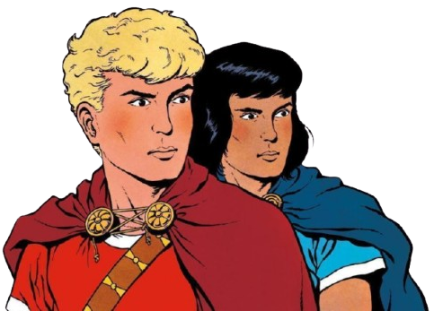
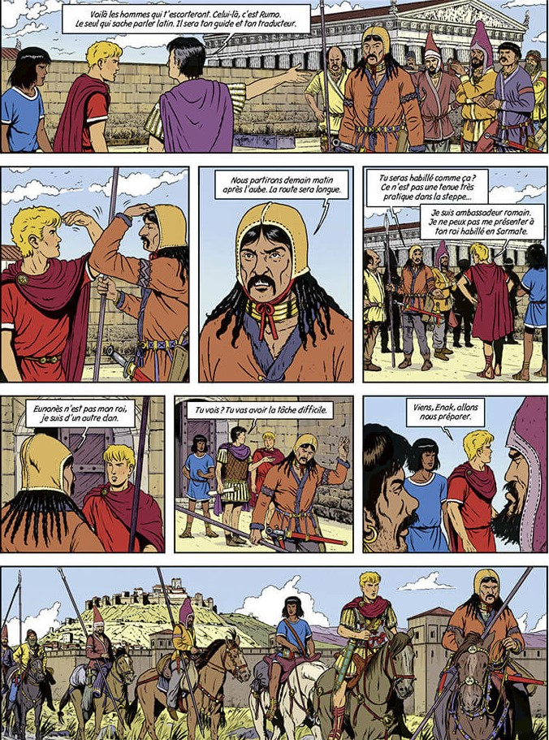
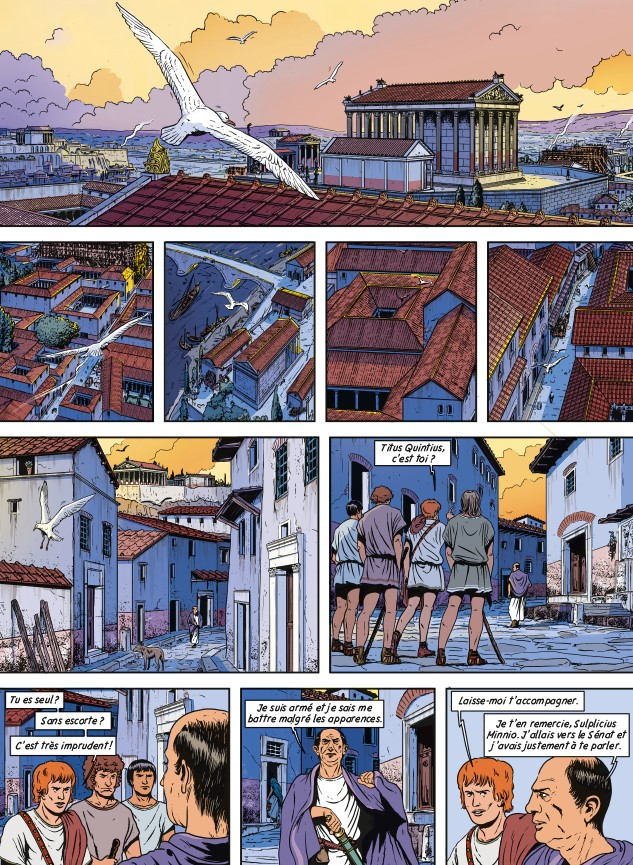
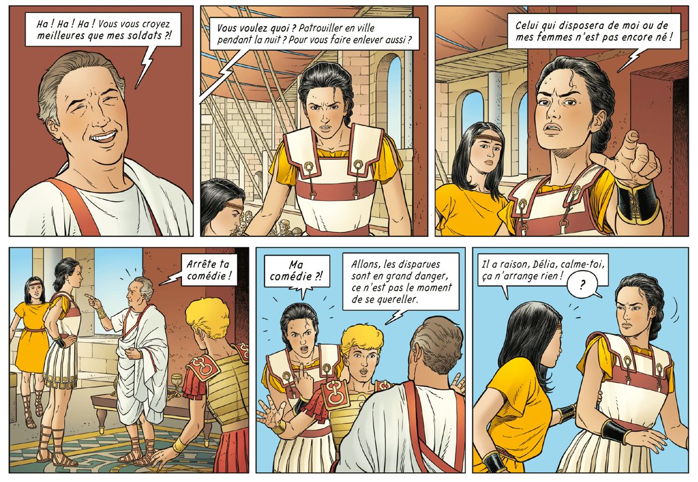
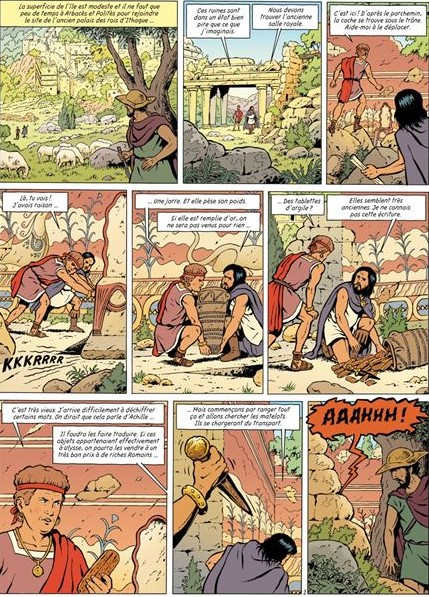
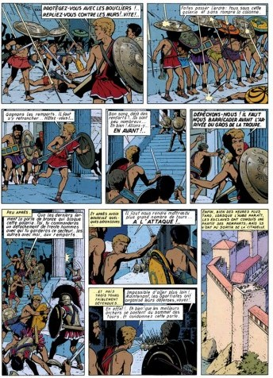

Alix le romain et son histoire :
Alix est un personnage crée par Jacques Martin. Dans ses livres, Alix est un jeune esclave d’origine gauloise qui serait devenu le fils adoptif d’un riche romain, Honorus Galla. Alix est un personnage courageux, écartelé entre deux cultures, entre son origine gauloise et son adoption romaine.
Jacques martin a longtemps écrit, dessiné, coloré ses bandes dessinées seul, puis il se fait aider par des dessinateurs, jusqu’à ne faire plus que des synopsis pour ses histoire à cause de sa vieillesse (c’est donc un scénariste qui fait la mise en page et développe l’histoire).

Jacques martin a longtemps écrit, dessiné, coloré ses bandes dessinées seul, puis il se fait aider par des dessinateurs, jusqu’à ne faire plus que des synopsis pour ses histoire à cause de sa vieillesse (c’est donc un scénariste qui fait la mise en page et développe l’histoire).





Jacques Martin est né le 25 septembre 1921, à Strasbourg, il est connu surtout pour ses séries, Alix, mais aussi Lefranc et pleins d’autres (Jhen, Loïs), et pour avoir assister Hergé sur plusieurs Tintin. Malheureusement, Jacques Martin est vite atteint de problèmes de vue, il se concentre donc sur les scénarios de ses bandes dessinées, en laissant le reste du travail à des dessinateurs et des co-scénaristes. Il meurt le 21 janvier 2010, à Orbes, en Suisse. Il laisse derrière lui des centaines de BD vendues à des milliers d’exemplaires, qui sont repris et connaissent des nouveaux albums même après sa mort.